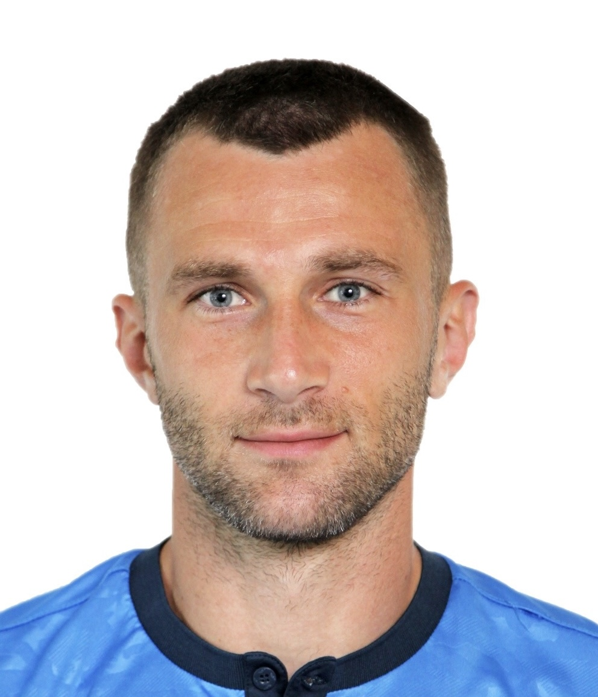

Александр Новицкий
Обо мне
Начинающий фронтенд-разработчик.
Тренер по футболу с международной лицензией C-UEFA
Отец, муж, сын, брат.
У меня есть собака
Что делаю
Активно учусь новой профессии
Тренирую команду мальчиков 2014 года. Плюс веду занятия у вечерних групп (Детей,которые начали заниматься недавно)
Цели
Добиться Успеха в жизни
- уважение
- деньги
- здоровье
- время
Мои навыки
- HTML начинаю
- Терпение есть
- Трудолюбие
- Критическое мышление
- Эмпатия
План на месяц
- Неделя: HTML скелет
- Как устроена страница
- Теги для текста
- Ссылки, картинки, пути
- Практика
- Неделя: HTML-продолжение — формы, таблицы, семантика
- Формы
- Таблицы
- Семантика
- Практика
- Неделя: CSS — каскад и box model (самая недооценённая неделя)
- Подключение и базовые свойства
- Селекторы, каскад, специфичность
- Box model — сердце CSS
- Практика
- Неделя: позиционирование и потоки
- Обычный поток
- Позиционирование
- Ещё по мелочи, но важное
- Практика
- Неделя: Flexbox (главный инструмент раскладок)
- Оси и выравнивание
- Размеры и перенос
- Вертикальное центрирование и типовые приёмы
- Практика
- Неделя: Grid
- Основы
- адаптивные сетки без медиазапросов
- Grid vs Flexbox — когда что
- Практика
- Неделя: Адаптивность
- Медиазапросы
- Резиновость
- Практика
- Неделя: Figma и финальный проект
- Figma
- Финальный проект этапа Сверстайте лендинг целиком: шапка с меню, первый экран, блок «о продукте» с сеткой карточек, отзывы, форма, подвал.
Где меня найти
Моё фото
